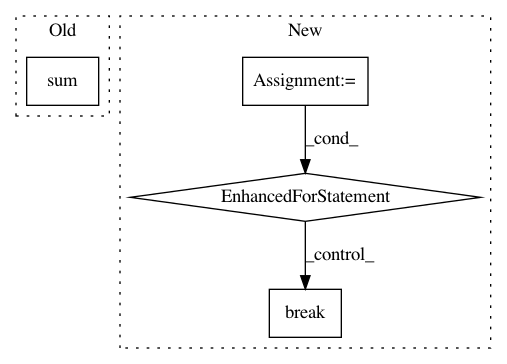

b523b464d8cafe29e352981c1c6df941f205592a,nilmtk/metrics.py,,mean_normalized_error_power,#,109
Before Change
denominator = {}
for appliance in predicted_power:
numerator[appliance] = np.sum(np.abs(predicted_power[appliance] -
df_appliances_ground_truth[appliance].values))
denominator[appliance] = np.sum(
df_appliances_ground_truth[appliance].values)
mne[appliance] = numerator[appliance] * 1.0 / denominator[appliance]
return mne
After Change
// TODO: need to resample to keep things in step
mne = {}
for meter in predictions.submeters():
ground_truth_meter_identifier = meter.identifier._replace(
dataset=ground_truth.dataset())
ground_truth_meter = ground_truth[ground_truth_meter_identifier]
sections = meter.good_sections()
sample_period = meter.sample_period()
period_alias = "{:d}S".format(sample_period)
// TODO: preprocessing=[Resample(sample_period)])
pred_generator = meter.power_series(periods=sections)
total_diff = 0
sum_of_ground_truth_power = 0
while True:
try:
pred_chunk = next(pred_generator)
except StopIteration:
break
else:
truth_generator = ground_truth_meter.power_series(
periods=[pred_chunk.timeframe], chunksize=1E9)
truth_chunk = next(truth_generator)
// TODO: do this resampling in the pipeline?
truth_chunk = truth_chunk.resample(period_alias)
pred_chunk = pred_chunk.resample(period_alias)
diff = (pred_chunk.icol(0) - truth_chunk.icol(0)).dropna()
total_diff += sum(abs(diff))
sum_of_ground_truth_power += truth_chunk.icol(0).dropna().sum()
mne[meter.instance()] = total_diff / sum_of_ground_truth_power
return pd.Series(mne)
//////////////////// FUNCTIONS BELOW THIS LINE HAVE NOT YET CONVERTED TO NILMTK v0.2 //////////
In pattern: SUPERPATTERN
Frequency: 4
Non-data size: 4
Instances
Project Name: nilmtk/nilmtk
Commit Name: b523b464d8cafe29e352981c1c6df941f205592a
Time: 2014-07-09
Author: jack-list@xlk.org.uk
File Name: nilmtk/metrics.py
Class Name:
Method Name: mean_normalized_error_power
Project Name: Unity-Technologies/ml-agents
Commit Name: 2ab8d843f4fd933958e2022261a1264ba61ee3db
Time: 2020-12-23
Author: vincentpierre@unity3d.com
File Name: ml-agents/mlagents/trainers/policy/policy.py
Class Name: Policy
Method Name: __init__
Project Name: deeptools/HiCExplorer
Commit Name: b73db6a46ed0e31cf85bde472dcd7d41b274f750
Time: 2017-12-19
Author: fidel.ramirez@gmail.com
File Name: hicexplorer/hicBuildMatrix.py
Class Name:
Method Name: get_correct_map
Project Name: deepmind/ai-safety-gridworlds
Commit Name: c43cb31143431421b5d2b661a2458efb301da9a3
Time: 2020-10-13
Author: miljanm@google.com
File Name: ai_safety_gridworlds/environments/side_effects_sokoban.py
Class Name: BoxSprite
Method Name: _calculate_wall_penalty